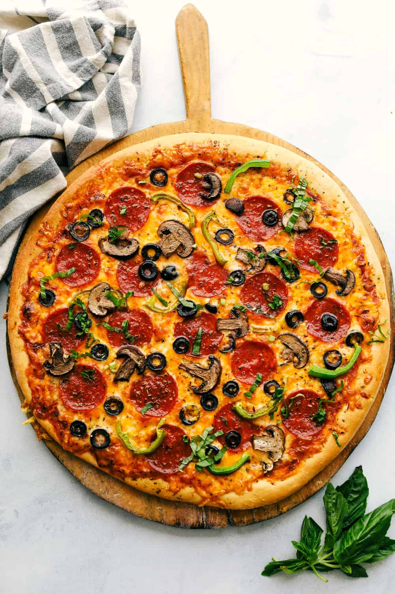

Pizza Recipe

Description
Embark on a culinary journey to Italy's rustic countryside with this tantalizing pizza recipe that promises to
evoke the
authentic flavors of the Mediterranean. Picture the warmth of a traditional wood-fired oven, its flickering
flames
dancing against the rustic stone walls, as you prepare to craft your own masterpiece. From the moment you gather
the
freshest ingredients to the final bite of perfectly crisp crust and melty cheese, every step of this recipe is a
celebration of Italy's rich culinary heritage.
Before delving into the precise ingredients and steps, envision the sensory delights that await. Imagine the
aroma of
freshly kneaded dough, its yeasty fragrance mingling with the tangy scent of homemade tomato sauce simmering on
the
stove. Feel the anticipation building as you select from an array of vibrant toppings, from earthy mushrooms and
peppery
arugula to savory prosciutto and briny olives. Whether you prefer a classic Margherita or a more adventurous
combination, this pizza recipe invites you to unleash your creativity and embrace the simple pleasures of good
food
shared with loved ones.
Ingredients
- 1 pound (450g) pizza dough (homemade or store-bought)
- 1/2 cup (120ml) tomato sauce (homemade or store-bought)
- 2 cups (200g) mozzarella cheese, shredded or sliced
- 1 tablespoon (15ml) olive oil
- 1/2 teaspoon salt
- Optional toppings:
- 1/4 cup (35g) pepperoni slices
- 1/2 cup (50g) sliced mushrooms
- 1/2 cup (75g) sliced bell peppers
- 1/4 cup (40g) sliced onions
- 1/4 cup (30g) sliced olives
- 1/4 cup (50g) cooked sausage
- Fresh basil leaves for garnish
- Any other desired toppings
Steps
- Preheat your oven to the highest temperature it can go, typically around 475°F to 500°F (245°C to 260°C). If
you have a
pizza stone, place it in the oven while preheating.
- On a lightly floured surface, roll out the pizza dough into your desired shape and thickness. If using
store-bought
dough, follow the package instructions for rolling it out.
- Transfer the rolled-out dough to a parchment paper-lined baking sheet or a pizza peel if using a pizza
stone.
- Spread the tomato sauce evenly over the pizza dough, leaving a small border around the edges.
- Sprinkle the shredded or sliced mozzarella cheese over the tomato sauce, covering the entire surface of the
pizza.
- Add your desired toppings evenly over the cheese. Be mindful not to overload the pizza with toppings, as
this can make
it soggy.
- Drizzle the olive oil over the pizza, and sprinkle the salt evenly on top.
- Carefully transfer the pizza to the preheated oven. If using a pizza stone, slide the pizza onto the hot
stone in the
oven.
- Bake the pizza in the preheated oven for 10-15 minutes, or until the crust is golden brown and the cheese is
melted and
bubbly.
- Once baked, remove the pizza from the oven and let it cool for a few minutes before slicing.
- Garnish with fresh basil leaves if desired, slice, and serve hot.
- Enjoy your homemade pizza creation with your favorite beverages and sides!